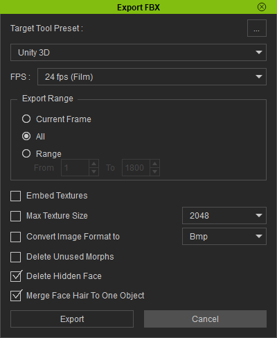
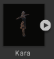
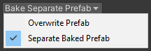
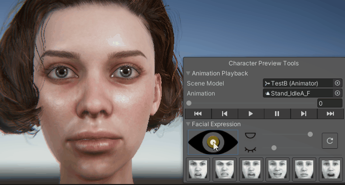
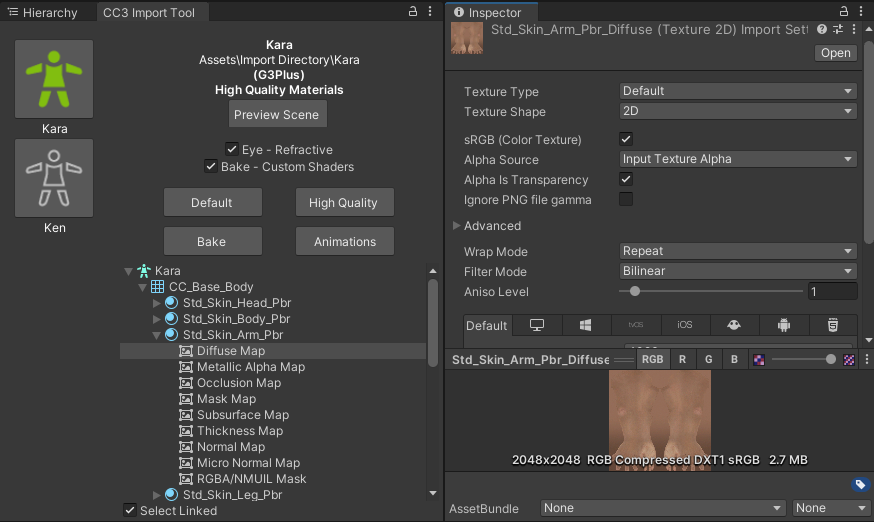

Usage
Initial Import Into Unity
In Character Creator, or iClone prepare your character as you see fit.
In Character Creator export the character using Export -> FBX (Clothed Character).
Select the following options in the export window (you may need to scroll down to see all options).
Target tool preset: Unity 3D, select: Current Pose, Delete Hidden Faces, Merge Beard and Brows into one object and Bake Diffuse and Specular maps from Digital Human Hair Shader.
Click Export to begin the export process.
In iClone export the character using Export -> Export FBX…
Select the following options in the export window.
Target tool preset: Unity 3D, select: Export Range = All, Delete Hidden Faces, Merge Face Hair to One Object.
Click Export to begin the export process.
In Microsoft Windows open the file explorer and navigate to the export directory. In your Unity 2020.3 or above project browser, navigate to the folder in your project where you will be placing your imported character.
Now drag the <name>.fbx and <name>.json files & the textures and <name>.fbm (if present) folders from Windows file explorer into the project browser’s target folder of your Unity project.
Opening The Import Tool
To open the import tool, you can right click on the <name>.fbx avatar
From the right click menu select CC3 → Import Character

Alternatively, you can open the import tool from the top menu bar (CC3 → Import Characters)

This will open the main tool window (by default this will be docked next to the Scene Hierarchy View window - it is shown here undocked).
The import tool will actively detect all of the valid Character Creator 3 characters that are contained in the Unity project and display them vertically on the left hand side of the tool window.
If your character is not displayed (or if no right click menu option is available to open the import tool) then please ensure that all of the exported data from CC3 has been dragged into the Unity project browser (there must be at least the .fbx and .json files and a textures folder containing a subfolder with the same name as the .fbx asset).
If you add a character to the project whilst the tool is open, you can refresh the available character list with the button.
Beginning The Import
Firstly ensure the character you wish to process is currently selected by clicking on the character icon (on the left hand side). The currently selected character will be shown as follows.
The selected character is now ready to be processed. The following options will be initially available:
Initial Processing
Quality Settings
The three principal quality settings are presented as dropdown menus, with the defaults pre-selected as shown below.
The following dropdown options are available:
High Quality Materials (Default) processing will set up the character with materials using a custom ShaderGraph which replicates the visual quality of CC3 as closely as possible.
|
|
Parallax Eyes (Default) This option will apply a high quality shader to the eyes which attempts to properly simulate the refractive properties of the eye, offering excellent visual quality. this shader also allows control over eye attributes such as pupil size.
|
|
Single Pass Hair This option will apply a single pbr material to the hair meshes, whilst having lower performance this also offers lower visual fidelity (this should be used as the general use case).
|
Further Settings
Clicking on the settings icon will show a secondary settings panel.
Currently this panel allows users to revert from the new standard of ‘Amplify Shaders’ to the original Unity Shadergraph shaders or to disable the reconstruction of flow map normals.
NB: AMP Shaders are shaders made with the Amplify Shader Editor for which has higher quality anisotropic lighting of the hair at a minimal performance cost. This will become the new shader standard going forward.
You can return to the main tool window from the sttings panle by clicking the back button.
Once you have set your options then the model can be processed by clicking the ‘Build Materials’ button, Unity will then process the character and write a log file in the same directory as the .fbx file.
Once processing is complete the tool window will be updated to reflect that.. The processed character icon will change color (Grey for Default processing, Green for HQ processing and Orange for Baked processing).
Additionally, the status text will be updated with the type of processing that has been performed (highlighted below).
Once the (High Quality) processing has been completed, a prefabs directory will be created in the same directory as the imported character .fbx file and a unity prefab of the imported character will be placed into it.
Further Processing
After initial processing further options will become available.
Baking
Baking is the most performance friendly option, whilst maintaining high visual quality. Two principal options are available as dropdown menus as before.
Bake will create and apply new materials which have consolidated all the texture influences into as simple a set of textures as possible to enhance performance.
Custom Shaders (Default) Uses materials with a custom ShaderGraph shader for very high quality and very good performance.
|
|
 |
Separate Baked Prefab (Default) The baked output will be written to a new prefab <name>_baked (in the same directory as the initialally created prefab).
|
Once the desired options have been set, then the process can be started with the button.
Any changes that are made to the main processing options (material quality, eye and hair settings) and then reprocessed via ‘Build Materials’ will cause the baked prefab to be automatically updated with those new settings.
The Baking workflow is show in the video below:
Animations
The animation button will process all of the animations contained in the .fbx.
It will conform the animations to Unity’s X,Y,Z co-ordinate system. It will also remove root transform motion from any animations labelled with ‘idle’. This will also create a default animator controller. Please use this option very carefully.
Post Processing
Preview Scene
After processing has completed, the output character can be inspected in a preview scene by pressing the ‘Preview Scene’ button .
This will open a new scene with neutral lighting; if your current scene is marked as changed then you will be prompted to save the current scene before changing to the preview scene.
The preview scene now contains a small tool to allow you to preview animations and facial expressions on your character. The previews are performed in Edit Mode only, so that the Unity project itself doesn’t have to enter Play Mode (which, for complex projects is desireable). The tool itself is controlled from an embedded pane in the SceneView window (In Unity versions below 2021.2.0 this will appear as a standard Gui window, above 2021.2.0 the tool will be contained in a more versatile (and moveable) overlay window).
The tool pane has two sections (each can be minimized/revealed by clicking it’s foldout button).
Animation Player
The animation player can play any appropriate Mechanim animation from your project on the character in the preview scene (by using the ‘Animation’ selector. The controls for this are standard (play/pause advance one frame back/forward and go to start/end) additionally dragging the ‘Time’ bar will allow you to spool manually through the animation. Additionally, any model (with an animator component) may be dragged into the scene and selected in the ‘Scene Model’ object selector to allow animations to be played on it.
NB: When an animation is playing, the facial expression controls are locked out.
Facial Expression
This section controls numerous aspects of facial manipulation it was introduced to replace the older menu driven facial manipulation and contains some useful features.
The eye control tool is used to ‘zoom in’ on the face (double click anywhere on the ‘eye’ graphic). This will change the scene view to look directly at the face of the character no matter what the position of the head is (this may result in unusual camera angles - this can be rectified by double clicking on the icon to return to a neutral angle).
Dragging the handle in the centre of the eye control tool will move the rotation of the eyes allowing detailed inspection of the eyes and the area of the face around the eyes are they are moved in real time.
Eye blink and mouth open/close can be controlled using the sliders:
As above these manipulate the character model in real time with no (as previous) menu usage.
A predefined set of facial expressions have been added so that these can be quickly previewed on the character with minimal effort.
Repeatedly clicking on a button will increase the strength of the expression applied to the character.
At any time, clicking on the icon will reset the face of the character (and double clicking will reset the camera).
Materials Inspector
The objects, materials and textures used in the model can be easily inspected from the hierarchical tree view. Selecting any of the items in the tree viewer will select them within your Unity project and display them in the inspector.
If ‘Select Linked’ is checked (by default this is checked) then when a material is selected then all others with common properties are also selected, displaying all members of the selected group in the inspector.

The ‘selectable groups’ are ‘Skin materials’, ‘Eye materials’, ‘Eye occlusion’ and ‘Teeth materials’ This will multiple select all of the materials associated with the ‘selectable group’ and present all of the common attributes in the inspector window.

This allows the simultaneous property adjustment of ‘like’ materials. For example selecting eye materials will allow the simultaneous adjustment of both left and right eyes.
Example adjustment – working zoomed in on one eye will also update the other eye for consistency:

Tools Menu
The CC3 → Tools menu can be used to further manipulate the character. Before using any option here make sure the character you wish to manipulate is selected in the scene (blue outline)

Reverse Triangle Order
This option is occasionally needed to correct any anomalies with alpha blended materials. This principal use of this is to ensure that hair materials are rendered in the proper order i.e. from inside to out. To use this, select the hair mesh of a model in the scene and use the menu option CC3 -> Tools -> Reverse Triangle Order.
Prune Blend Shapes
If a large number of blend shapes are exported with the character, then this option will cull those blend shapes which make a negligible contribution to the deformation of the model, leaving only those with a tangible effect.
Auto Smooth mesh
If Unity encounters a mesh that has differing vertex data (e.g. from split normals) then unity will split that mesh into separate faces and it will give the appearance of being flat shaded.
Usage: with the object selected use the menu option CC3 -> Tools -> Auto Smooth Mesh
Illustrated below: Left Apparent flat shading. Right Smooth shading after ‘auto smooth’
{kind=link}
{kind=link}
Orbit Scene View
The scene camera can be made to slowly orbit the character by using CC3 -> Tools -> Orbit Scene View (to stop the orbit select this menu option again). If the character is animating and moving around then the rotation can track the character using CC3 -> Tools -> Orbit Scene View (Tracking) (again this cn be stopped by selecting the menu item again).
Open or Close Character’s Mouth/Eyes [Legacy]
This is useful for inspecting the character to ensure there are no hidden problems with the mouth and eyes.

The eye menu CC3 → Tools → Eye enables movement of the eye direction for a detailed inspection of the eye.